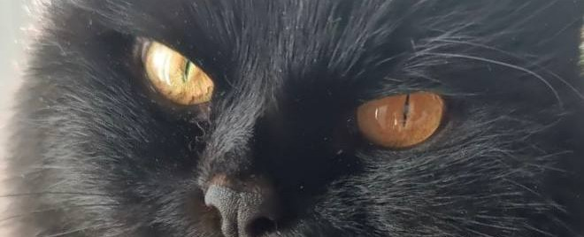

Расскажем все!
Краткая информация:
- Многие бы назвали ее дворняжкой, но в действительности она может относиться к породе бомбейских кошек
- Страна рождения: Россия
- Вес: 4,6 кг
- Возраст: 15 лет
Характеристика
- Активность 3/5
- Ласковость 5/5
- Потребность в уходе 1/5
- Здоровье 4/5
- Интеллект 4/5
- Общительность 4/5
Внешность Тоши
Как говорилось мной ранее, Тоша хоть и дворняжка, она все равно может относиться к рожу "Бомбейской" Единственной явное отличие от породистых это длинная шерсть. Ее рость прекратился окончательно к двум годам. Тело ее вытянутое, лапы и хвость длинные
Голова
Размер средний, по форме максимально приближена к кругу, без выступов и углов.
Мордочка
приятно округлая, разводы плавные. Крепкий и сильный подбородок. Челюсти мощные. Прикус правильный, клещеобразный – зубы ровные, не заходят друг на друга, резцы прямо смыкаются.
Нос
Брейк выражен достаточно четко, но не резко, не переходит в излом, чтобы профиль не выглядел «орлиным» или курносым. Кончик носа слегка закруглен вниз.
Глаза
Oни широко расставлены, имеют округлую форму, большие, в целом отличных пропорций, яркие, блестящие. По американскому стандарту допускаются только оттенки от темно-янтарного до золотого, причем предпочтение отдается первому – так глаза больше всего похожи на медный пенни, монету достоинством в один цент.
Туловище
Среднего размера. Удлиненное, пропорциональное, с отлично развитой мускулатурой. Хорошо развитая широкая грудь, мощные плечи и бедра.
Хвост
Хвост кошки средней длины, нетонкий, сильный. К кончику едва заметно сужается. Очень пушистый
Уход и содержание
Тоша максимально не прихотлива в уходе. Кроме одного максимально сложного момента - длинная шерст. Такую киску надо расчесывать каждый день, купать с распутывающим шампунем раз в месяй, чтобы у нее не образовывались колтуны. Но все мы прекрасно понимаем, что мы все работаем и не успеваем все делать. Поэтому проворонив пару раз ее расчевывание, приходиться комки вырезать. Сама по себе Тоша очень домашняя кошка. К прогулкам в шлейке не приучена. Эта котейка максимально теплолюбива. Поэтому увилеть ее тискующиеся с нами очень легко. Так же что удивительно, она не прихотлива к наполнителю кошачьего туалета, поэтому приучение к лотку произошло максимально быстро!Небольшие итоги
Эта котейка важный для нас член семью, безумно любима нами всеми, не знаю даже, что бы я без нее делала. Без ее ласканий и мурлыканья, она самая лучшая милашка на свете!